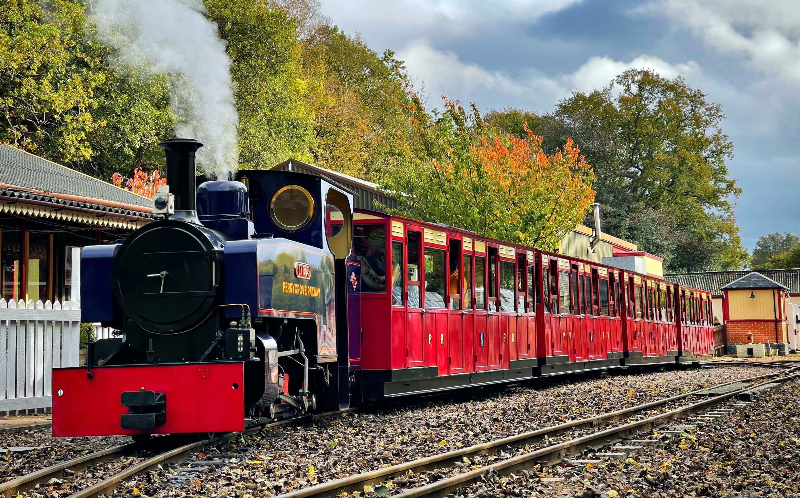

Welcome to Train Archive
Step into the world of trains, where history, engineering, and exploration converge. At Train Archive, we are dedicated to uncovering and sharing the remarkable stories behind some of the world’s most iconic trains and railway systems. From the high-speed thrills of the Shanghai Maglev to the timeless luxury of the Orient Express, this archive offers a rich tapestry of rail travel, celebrating the art, science, and adventure that make train journeys so captivating. Whether you're a train enthusiast, a history buff, or a curious traveler, there is something here for everyone.

What Trains do We Have?
Explore our in-depth collections that showcase the evolution of train technology—from early steam engines that shaped the industrial age to the advanced magnetic levitation systems that represent the future of high-speed travel. Each section dives deep into the innovations and craftsmanship behind these engineering marvels, highlighting the relentless pursuit of speed, efficiency, and comfort that has defined the progress of railway transportation. We cover trains that defy gravity, those that traverse diverse terrains, and even those designed to indulge passengers in opulent surroundings.
What is so Interesting About this Train?
In addition to its speed, the Shinkansen is world-renowned for its safety. With rigorous maintenance protocols, advanced earthquake detection systems, and state-of-the-art control technologies, the Shinkansen has maintained a flawless safety record, boasting zero passenger fatalities in over five decades of operation. Every year, millions of locals and tourists alike experience the convenience and reliability of the Shinkansen, making it the preferred mode of travel across Japan’s major cities. In recent years, the train has also become an icon of sustainable transportation, incorporating energy-efficient technologies and reducing emissions compared to other modes of high-speed travel.